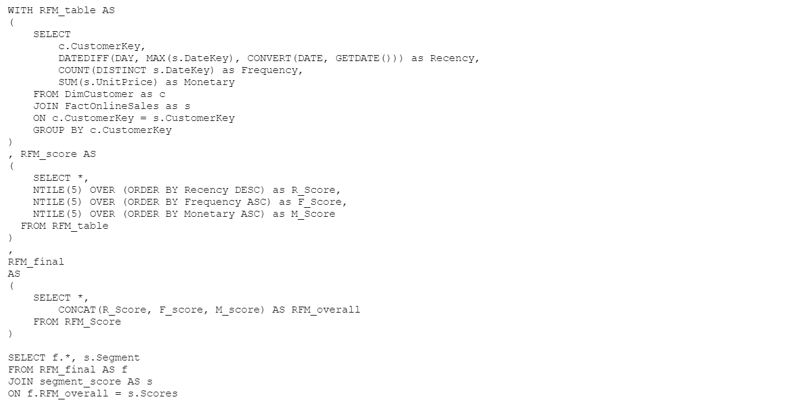
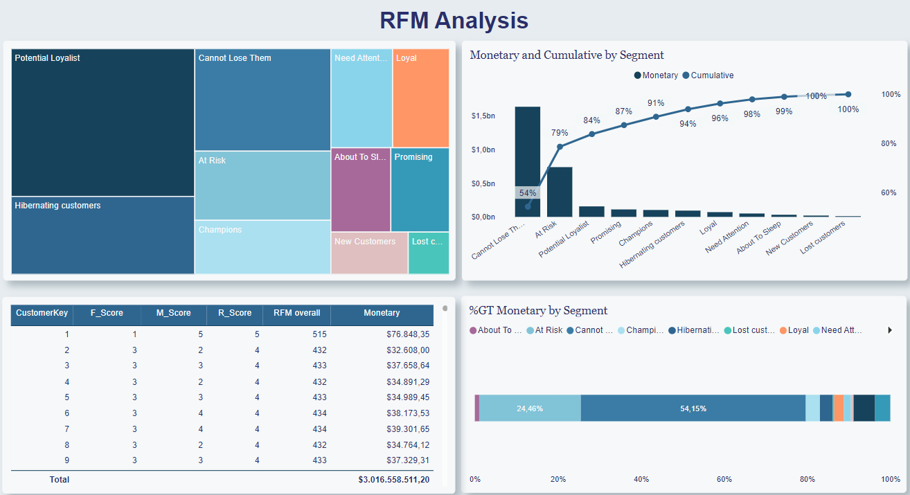
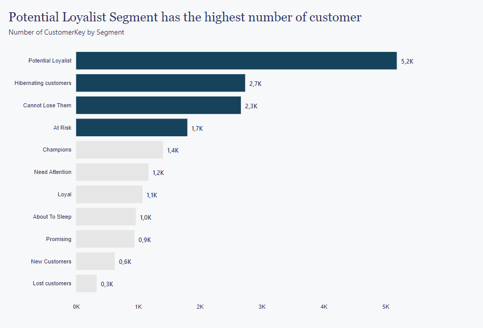
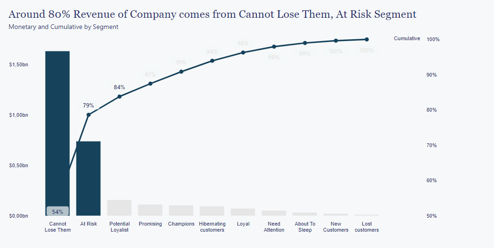
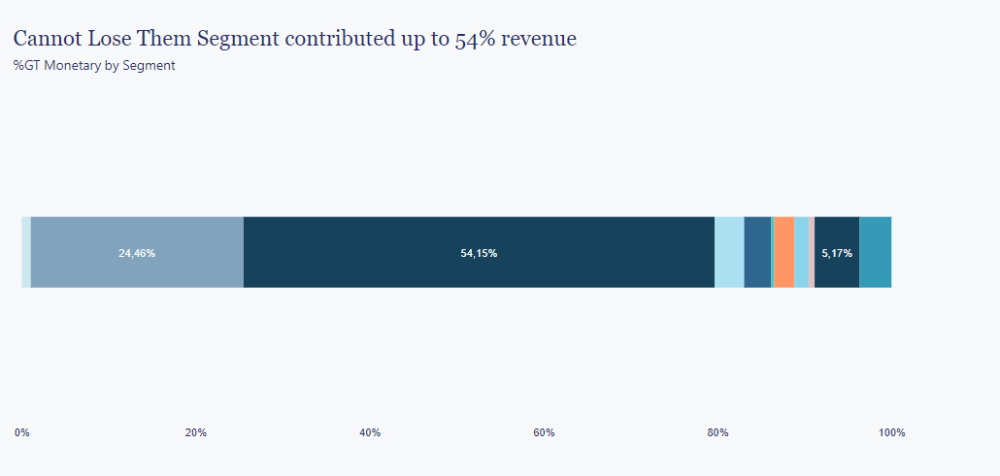

Data Cleaning and Analysis
E-commerce Customer Churn Analysis using SQL
Project Approach
I got this dataset from Kaggle ,and it contains information such as customers's personal details, satisfaction scores, preferred payment mode, days since the last order, and cashback amount. I used SQL (Azure Data Studio) to clean and analyze this dataset, and performed visualizations using Microsoft Power BI. This analysis is divided into several stages: data cleaning, data exploration, an insight section, and recommendations.
Data Cleaning
2. Visualization
Findings
Customer Segments and Revenue Distribution: The "Potential Loyalist" segment, with the largest customer base, offers promising potential for long-term loyalty and repeat business. Meanwhile, the "Cannot Lose Them" segment, though smaller in size, is the most valuable, contributing 54% of the company's total revenue. Additionally, the "At Risk" segment, consisting of customers showing signs of disengagement, accounted for a significant 24.46% of the revenue.
Importance of Customer Retention:The "Cannot Lose Them" and "At Risk" segments together represent 78.46% of the company's total revenue. This highlights the critical importance of customer retention strategies, both for maintaining high-value customers and re-engaging those at risk of churn. Investing in personalized retention efforts can lead to substantial revenue preservation and growth opportunities.
Opportunity for Growth: The "At Risk" segment presents an opportunity for revenue recovery. Implementing targeted re-engagement and customer retention strategies can potentially prevent these customers from transitioning into the "Lost Customer" category and unlock additional revenue potential.
Cost-Effectiveness of Customer Retention: Retaining existing customers, particularly those in the "At Risk" segment, can be more cost-effective than acquiring entirely new customers. By prioritizing customer retention, the company can maximize the lifetime value of existing customers and improve overall profitability.
Long-Term Customer Value: The analysis underscores the significance of customer lifetime value. The "Potential Loyalist" segment represents an opportunity for ongoing revenue generation, while re-engaging and nurturing the "At Risk" segment can potentially transform them into loyal and high-value customers.
Recommendations
Segment-Specific Strategies: Tailor marketing and retention strategies for each customer segment, with a particular focus on the "Cannot Lose Them" and "At Risk" segments, to maximize revenue from these valuable groups.
Customer Retention Initiatives: Implement targeted and personalized retention campaigns for the "At Risk" segment to re-engage customers and prevent churn.
Loyalty Programs: Establish loyalty programs to incentivize and reward repeat purchases, especially for customers in the "Potential Loyalist" segment.